A Buscadora dos Dragões
Illaria
Busca fragmentos ligados aos Dragões Primordiais.
Salvo somente neste navegador.
Os mesmos personagens que aparecem para o grupo, mas aqui você pode guardar observações privadas. As notas ficam no armazenamento local do navegador e não aparecem na página dos Players.
Busca fragmentos ligados aos Dragões Primordiais.
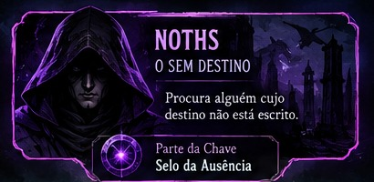
Marcado pelo Véu, percebe espíritos, maldições e rachaduras da realidade.
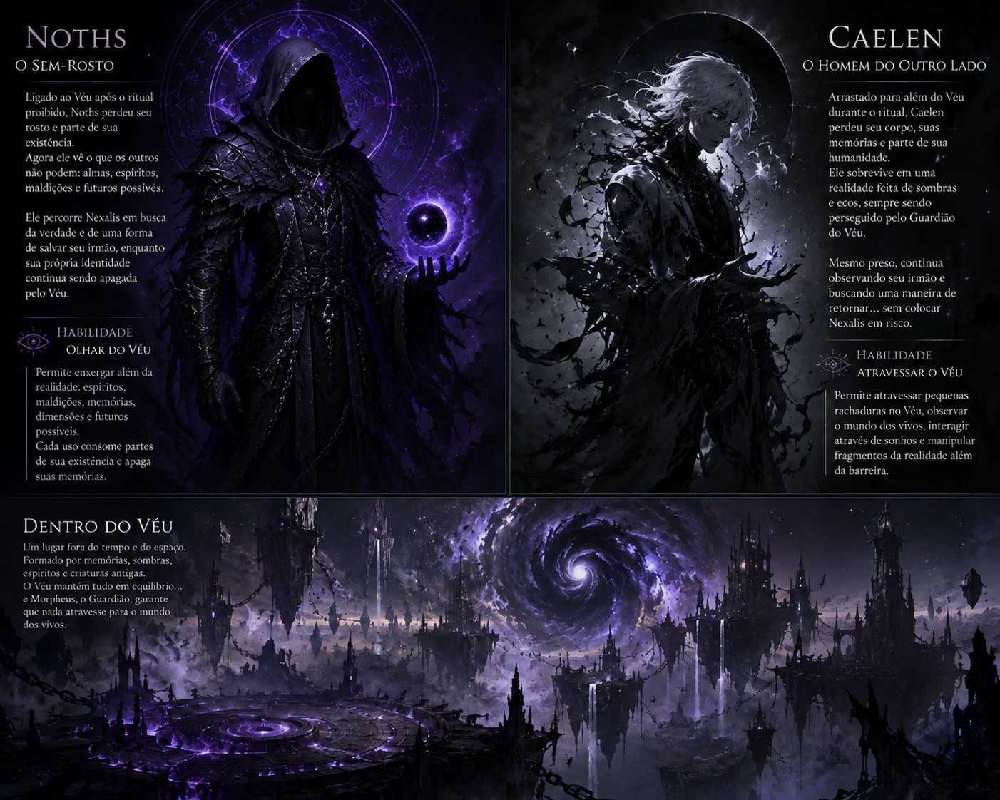
Preso além do Véu, ainda consegue observar o mundo dos vivos.

Investiga a queda de Valeron e seus responsáveis.
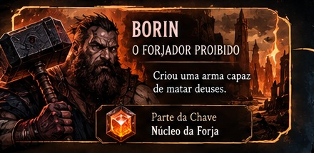
Forjador ligado a uma arma capaz de ameaçar até seres divinos.
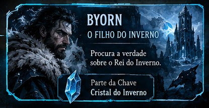
Busca a verdade sobre o Rei do Inverno.
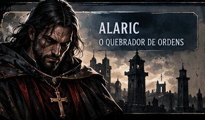
Ex-cavaleiro de uma ordem corrompida, guiado por justiça e dúvidas sobre a fé.
Selecione uma imagem para abrir a arte completa.
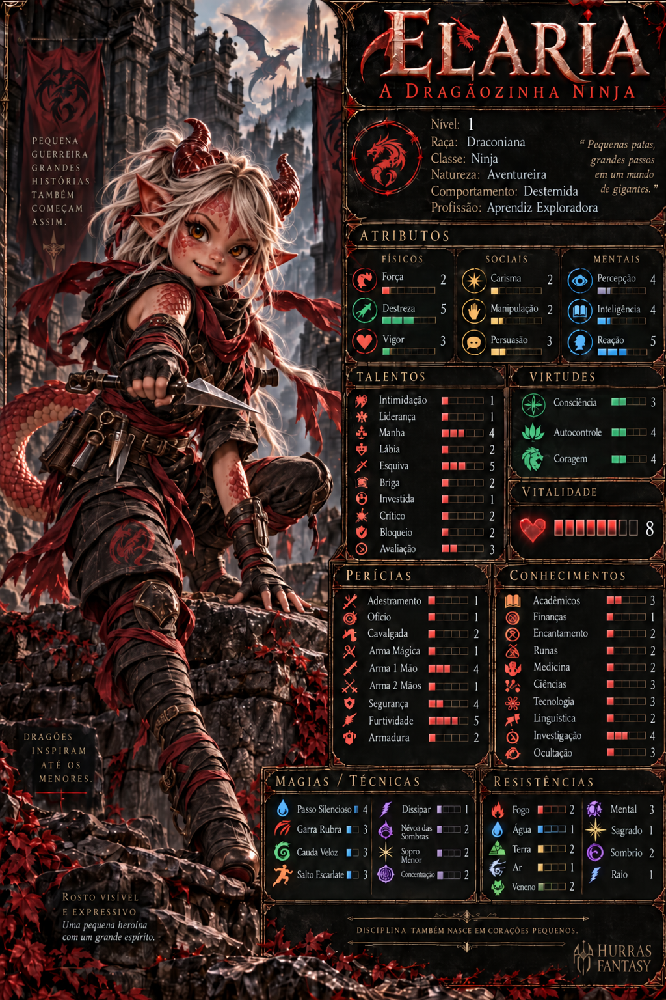
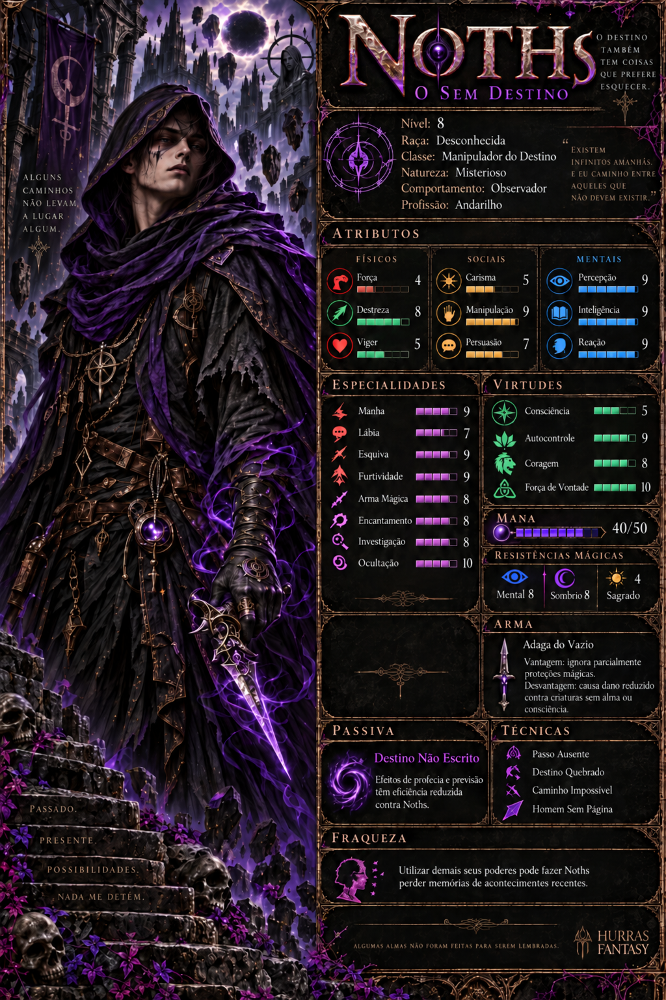
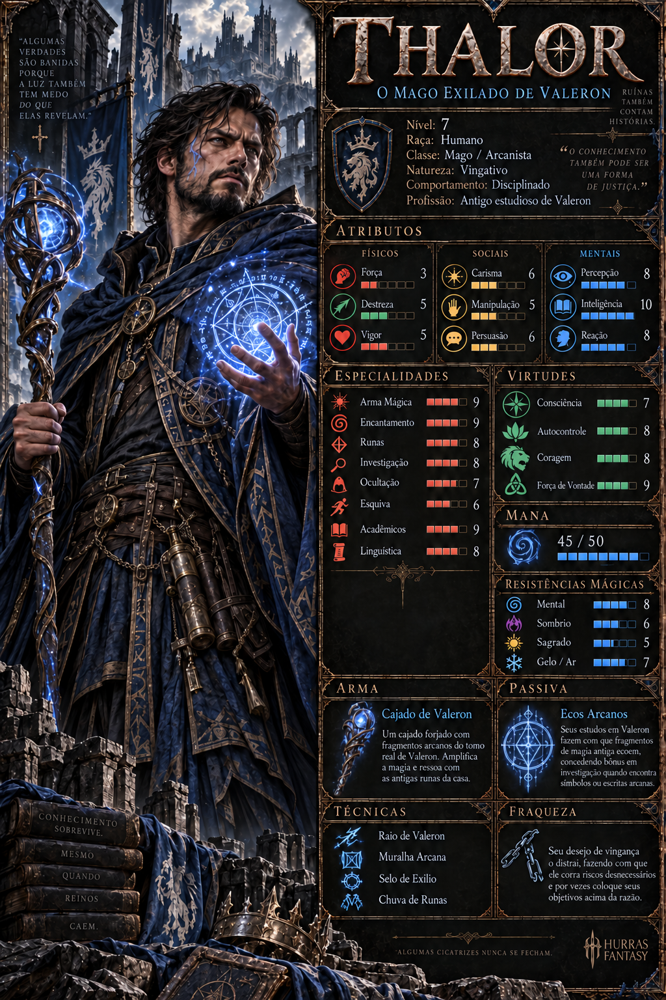
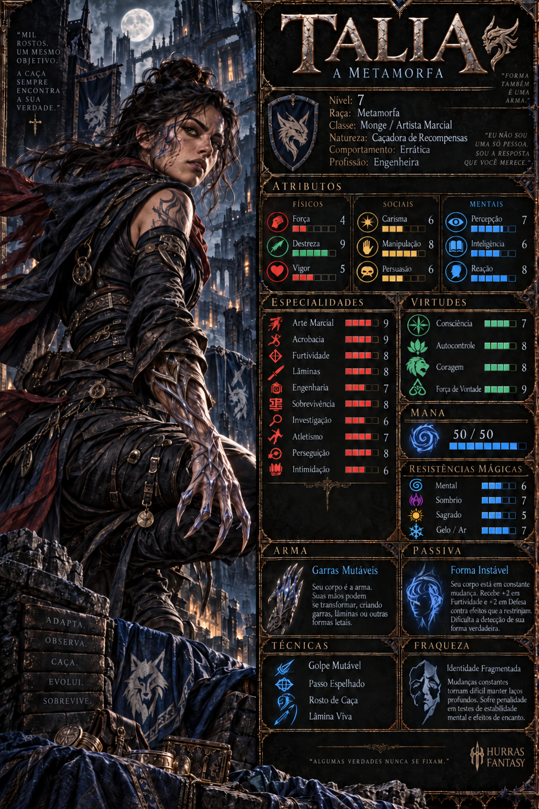
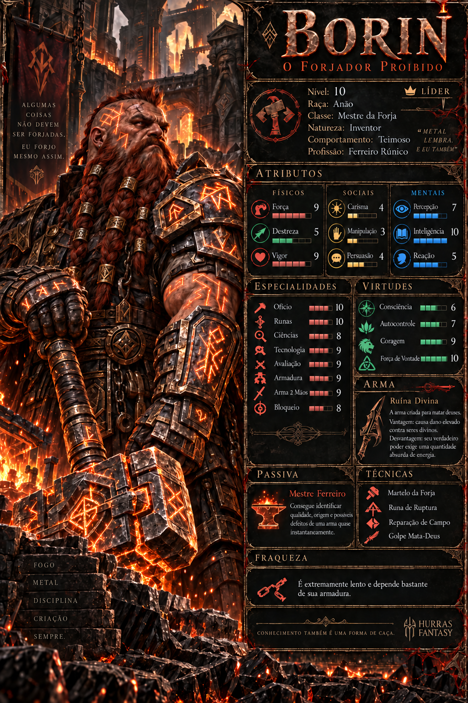
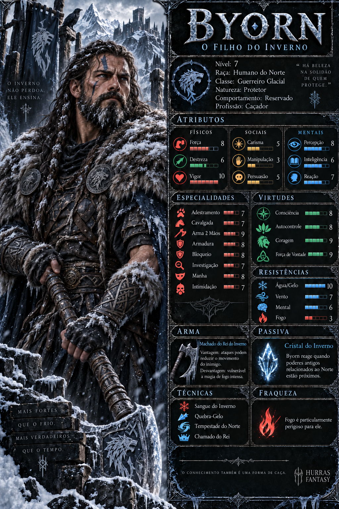
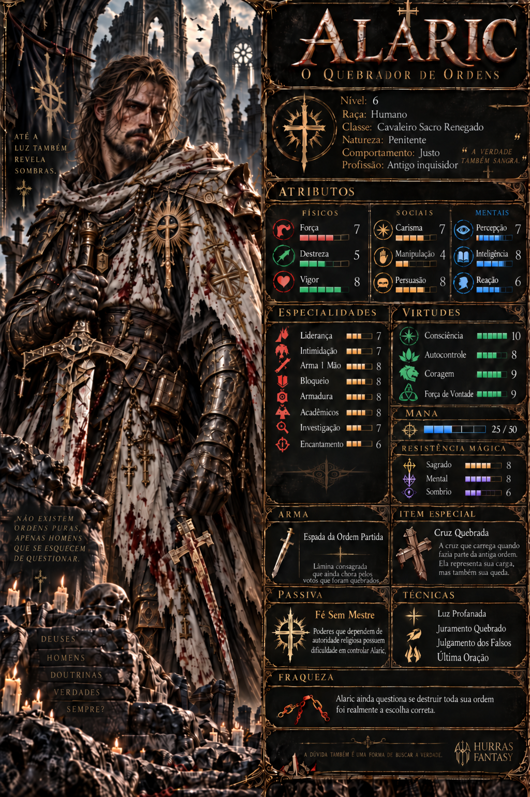
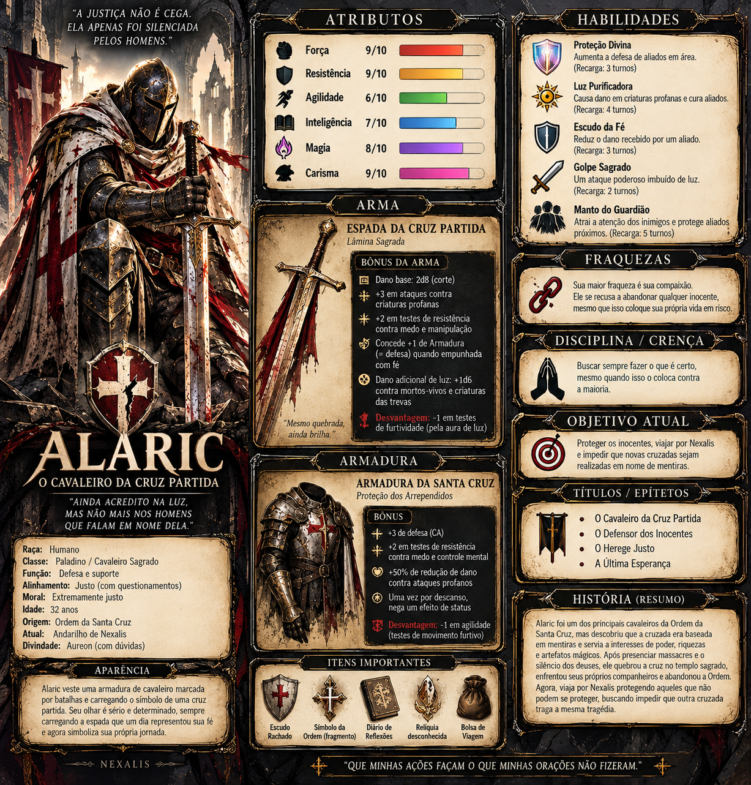
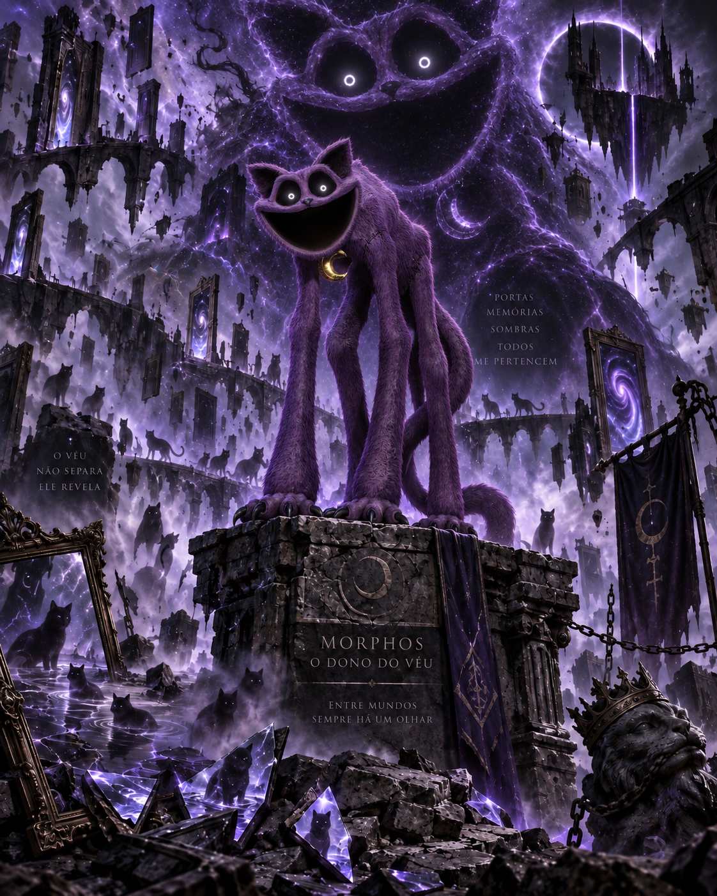
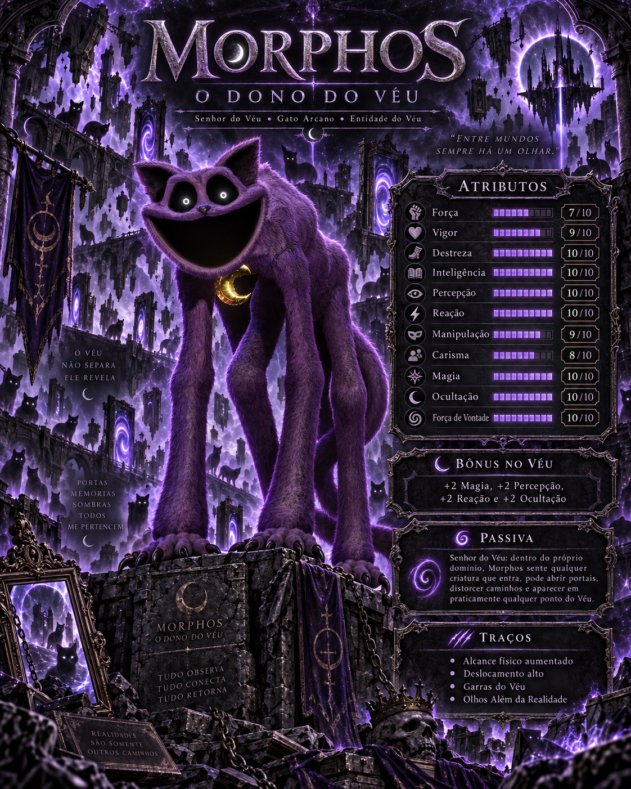
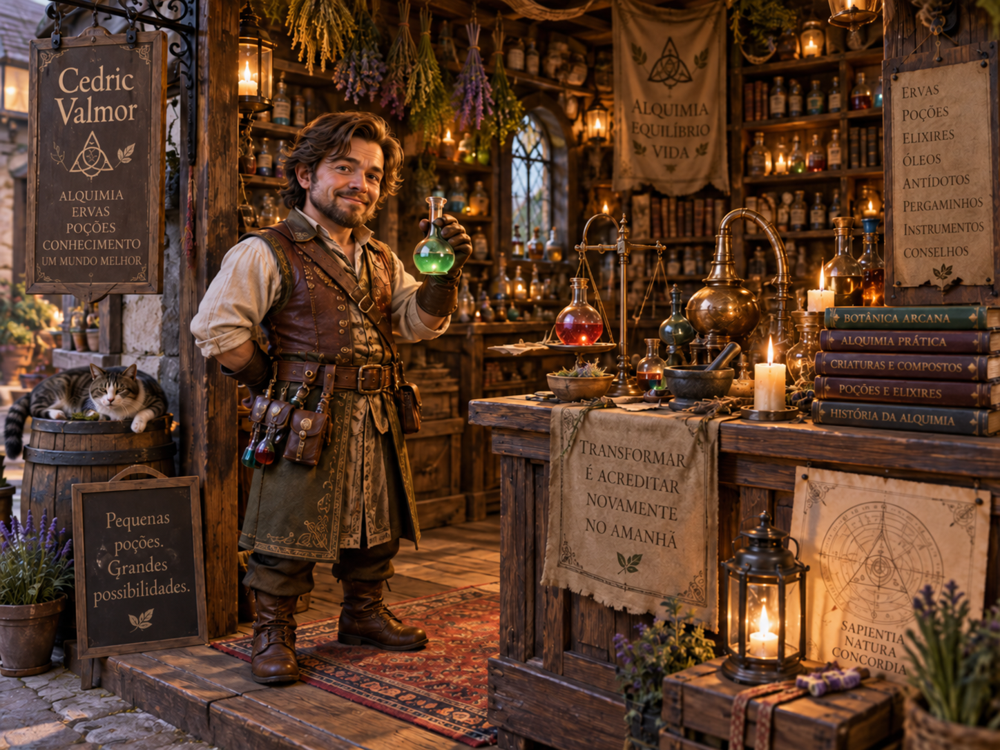
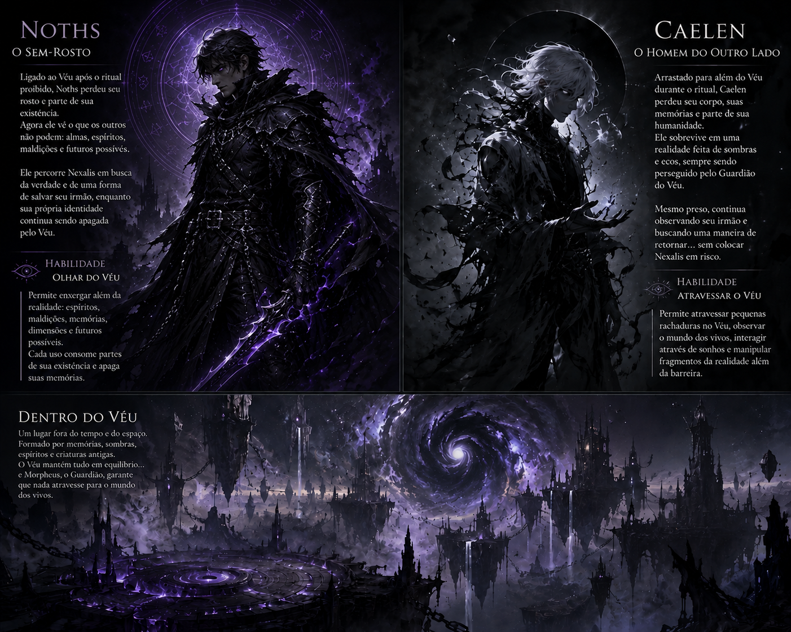